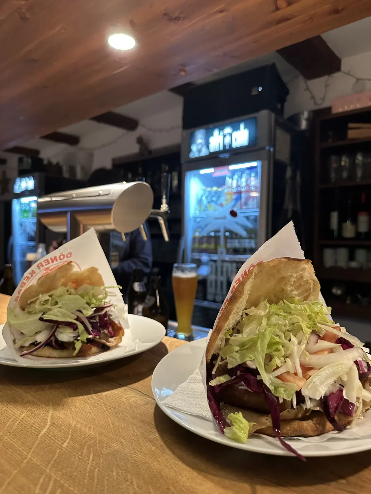
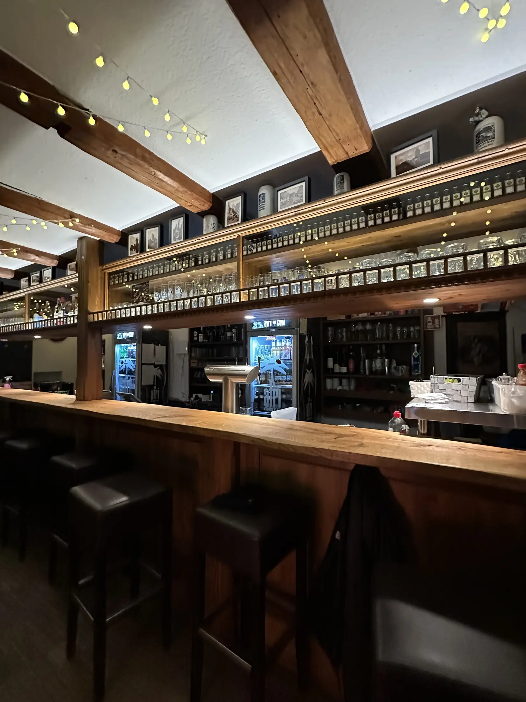
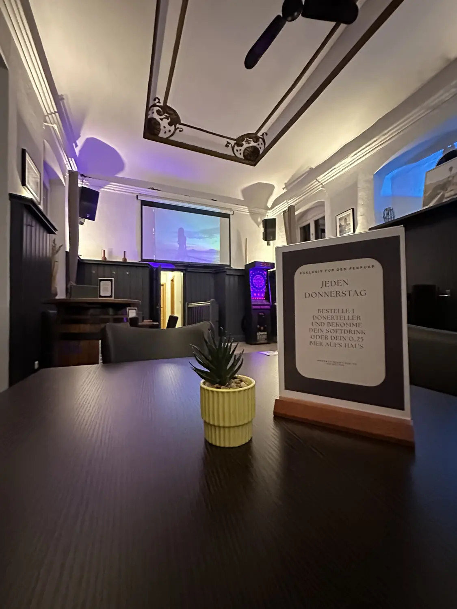
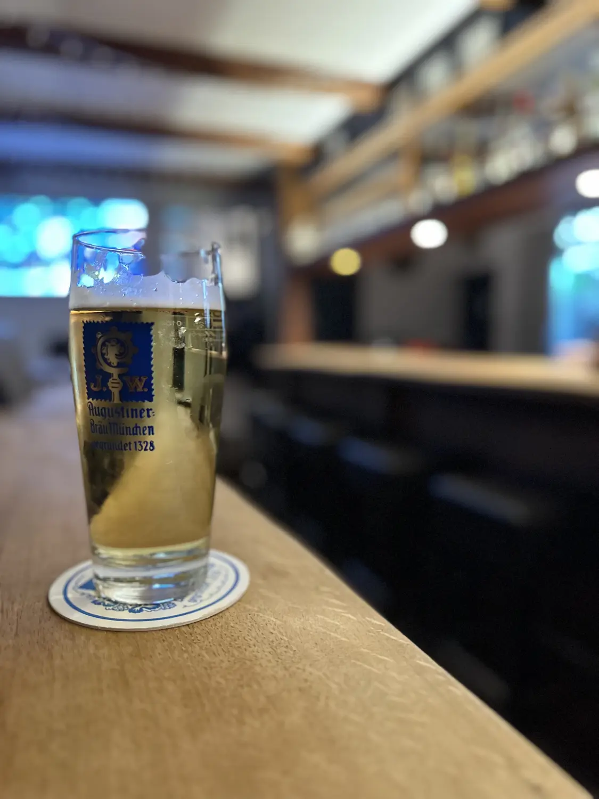
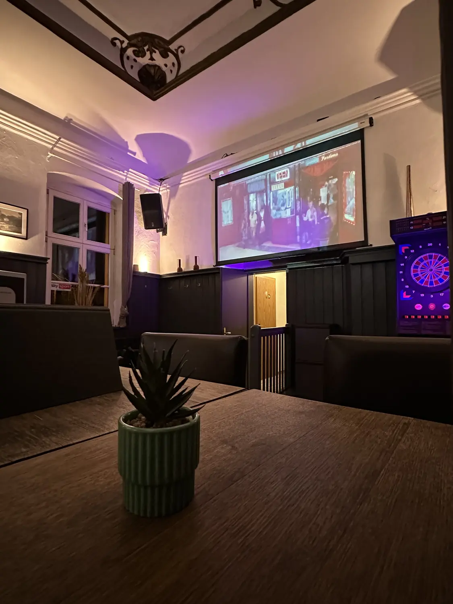
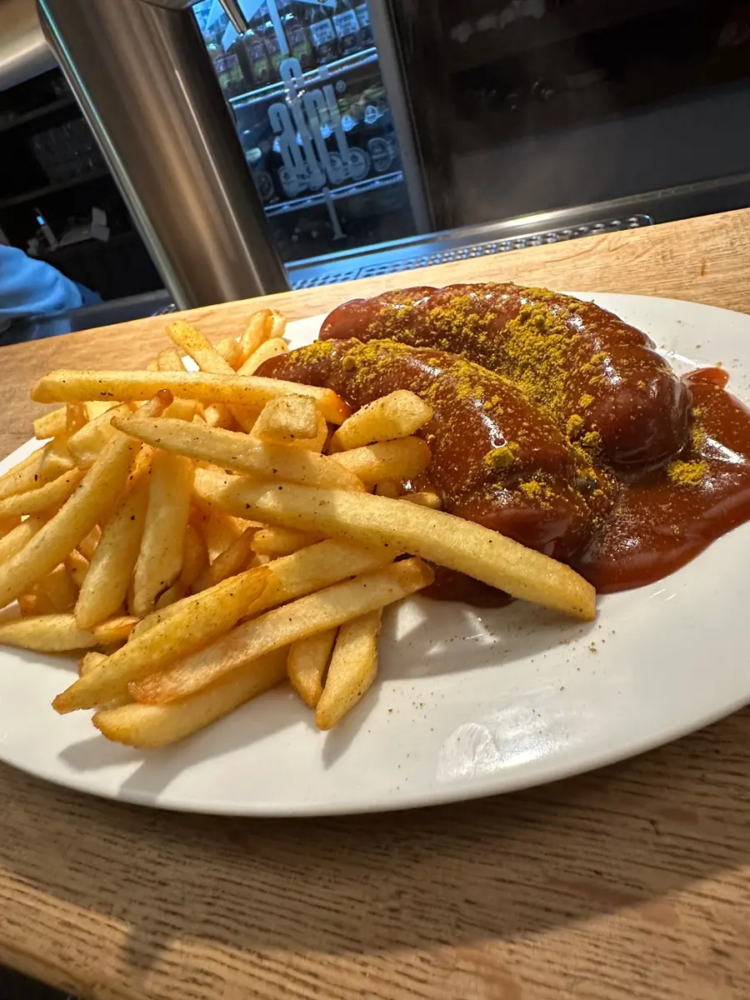

Dinkelsbühl · Dr.-Martin-Luther-Straße 18
Dein Abend.
Dein Treffpunkt.
Dein Stern.
Kühle Drinks, Live-Sport und ehrliches Barfood – mitten in Dinkelsbühl.
Öffnungszeiten ansehenWillkommen im Stern
Mehr als eine Bar.
Ein Ort für gute Abende.
Hier geht es nicht um großen Schnickschnack. Sondern um kalte Drinks, ehrliches Essen, Sport auf großer Leinwand und Menschen, mit denen man gerne länger sitzen bleibt.
Mitten in Dinkelsbühl verbindet der Stern die Atmosphäre einer vertrauten Bar mit allem, was ein entspannter Abend braucht.
Den Stern entdecken

01
Ein Platz zum Ankommen und Bleiben.
01
Live-Sport
Gemeinsam schauen statt allein vorm Bildschirm.
02
Gute Drinks
Klassiker, Bier und Cocktails – unkompliziert serviert.
03
Ehrliches Barfood
Herzhaft, frisch und genau richtig für einen langen Abend.
Drinks & Barfood
Genuss ohne Umwege.
Vom ersten kühlen Bier bis zum späten Hunger: Im Stern bekommst du genau das, was zu einem guten Abend gehört.
Live-Sport im Stern
Die großen Momente schaut man nicht allein.
Ob Fußballabend, Topspiel oder großes Finale: Bei uns erlebst du Live-Sport auf großer Leinwand – mit einem kühlen Getränk in der Hand und den richtigen Leuten am Tisch.
Platz anfragen
Live im Stern
Atmosphäre
So fühlt sich
der Stern an.
Warmes Licht, ehrliches Holz, ein Platz an der Theke oder gemeinsam am Tisch – such dir deinen Lieblingsplatz.

ÖffnungszeitenÖffnungszeiten
MontagRuhetag
Dienstag17:00 – 23:00
Mittwoch17:00 – 23:00
Donnerstag17:00 – 01:00
Freitag17:00 – 02:30
Samstag15:00 – 02:30
Sonntag15:00 – 23:00
AdresseDr.-Martin-Luther-Straße 18
Dr.-Martin-Luther-Straße 18
91550 Dinkelsbühl
Sitzplätze im Freien · Speisen an der Bar · Live-Sport
In Google Maps öffnen